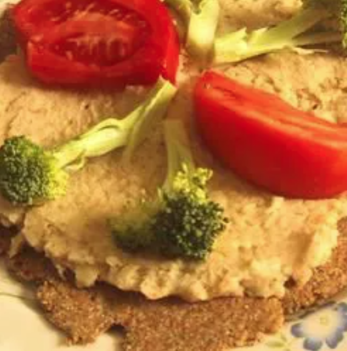

Fava beans

Fava beans, also faba beans, ful, horse beans, are strong flavoured beans with tough hulls.
Large fava beans are often called broad beans in English-speaking countries.
Fava beans are much used in Mediterranean, Middle Eastern, and Asian cuisines, and also feature in other cuisines.
Fava beans can be bought in the following forms:
- Green, in the pod
- Green, shelled and frozen
- Dried, shelled
- Dried, shelled and hulled, often also split